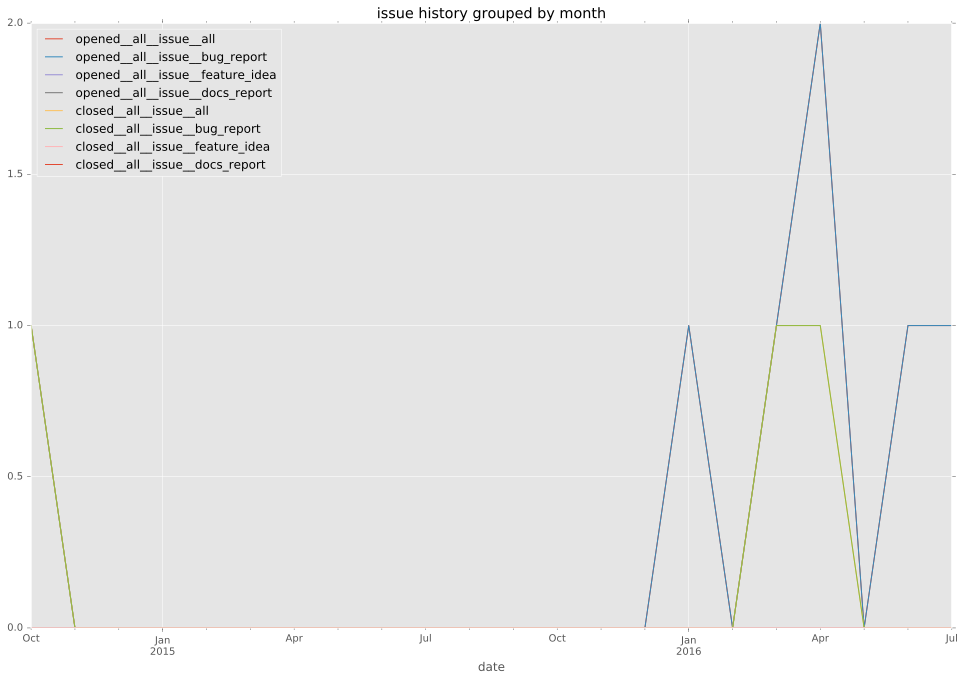
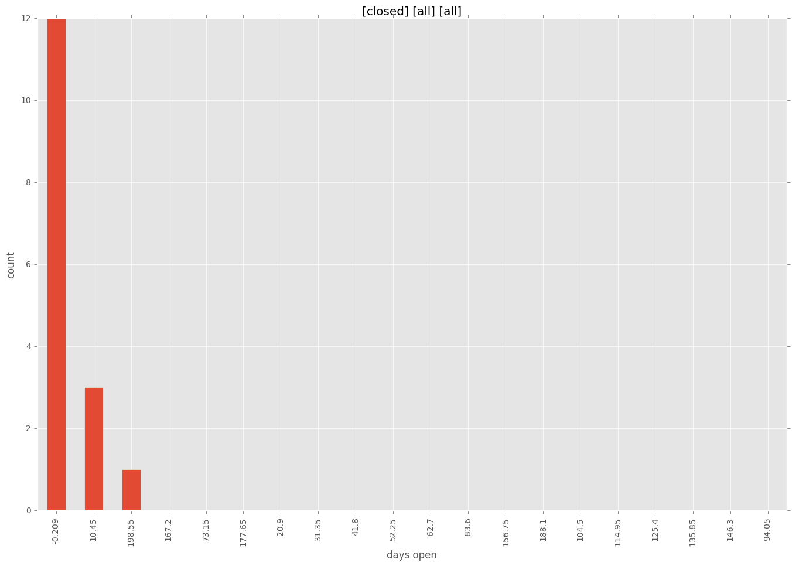
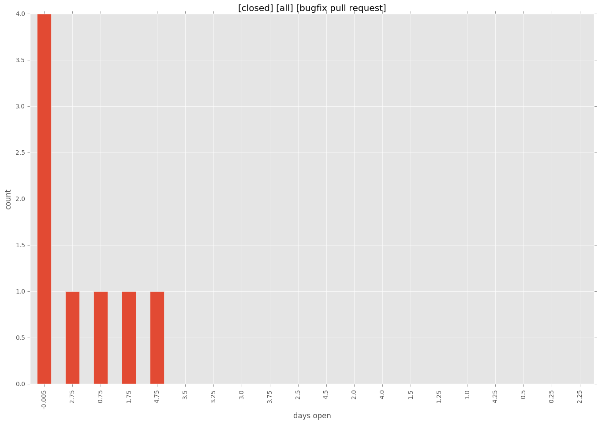
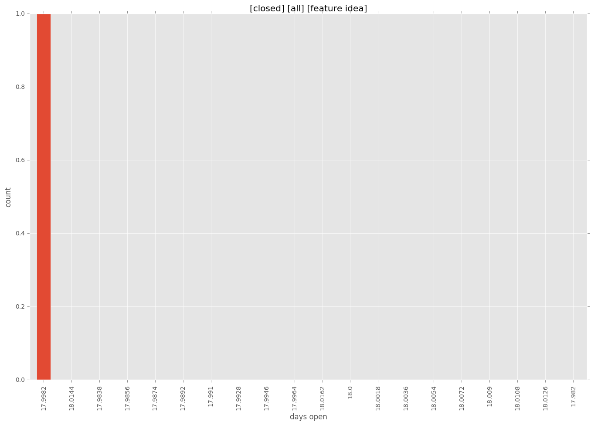
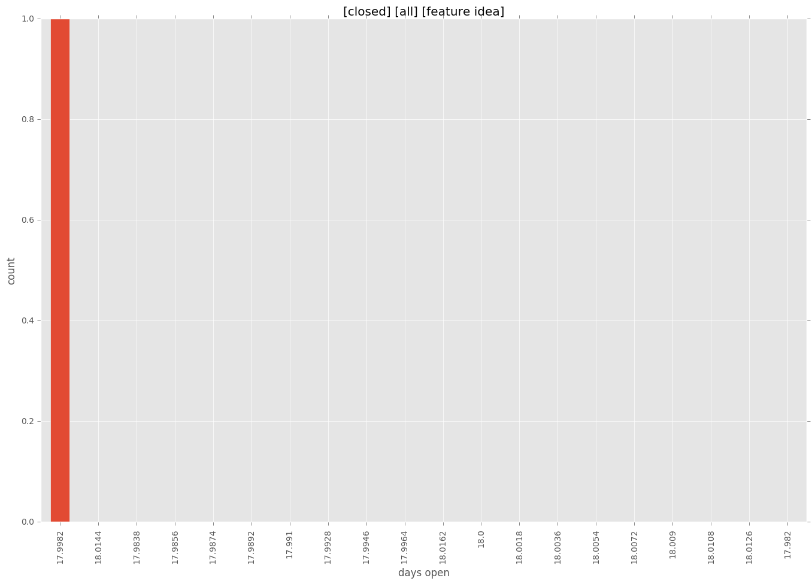
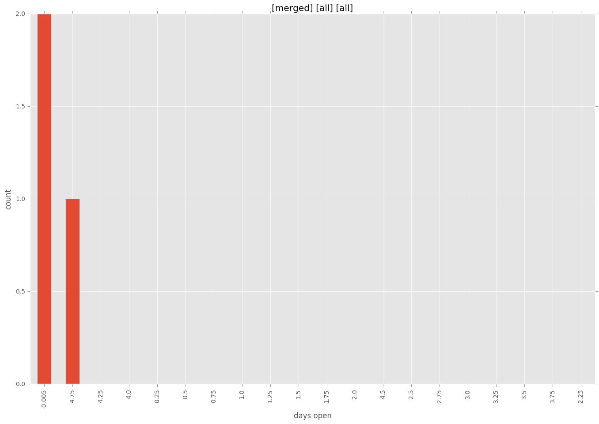
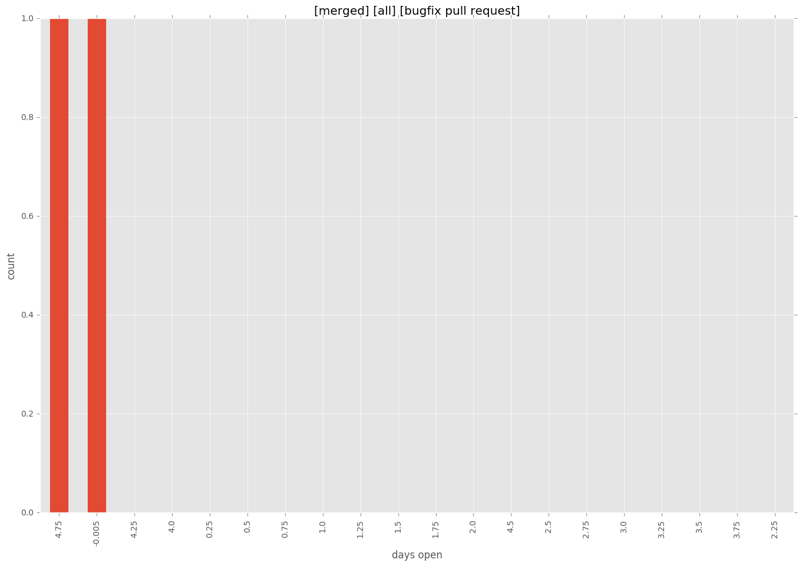
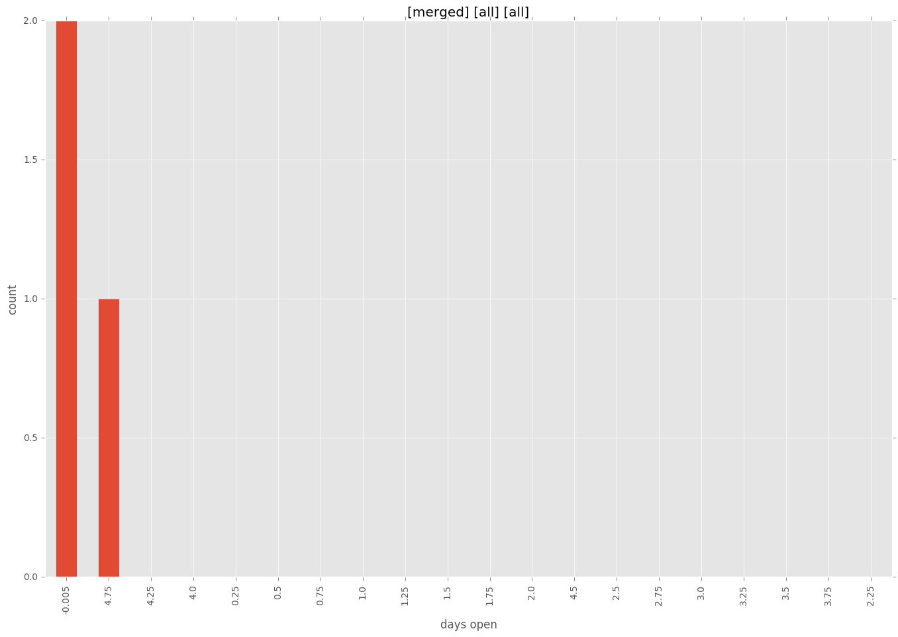
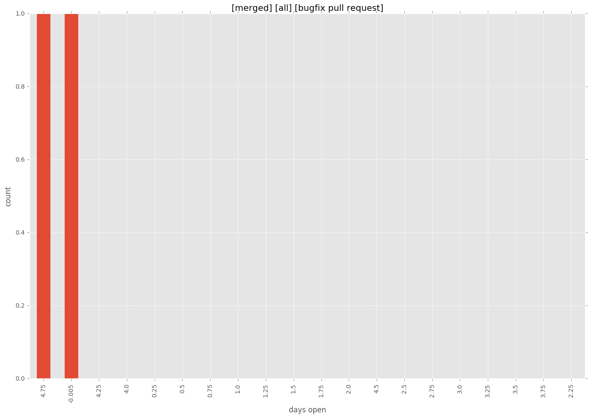

total issue counts
feature pull request: 5
pullrequest: 16
bugfix pull request: 10
feature idea: 1
issue: 7
bug report: 7
issue history

days open by issue type
bugfix pull request
count: 10
std: 2.06559111798
min: 0
max: 5
median: 0.5
mean: 1.6
all
count: 19
std: 47.5144176334
min: 0
max: 209
median: 0.0
mean: 14.7894736842
pullrequest
count: 0
std: nan
min: nan
max: nan
median: nan
mean: nan
feature pull request
count: 5
std: 89.7262503396
min: 0
max: 209
median: 18.0
mean: 49.4
feature idea
count: 1
std: nan
min: 18
max: 18
median: 18.0
mean: 18.0
issue
count: 0
std: nan
min: nan
max: nan
median: nan
mean: nan
bug report
count: 3
std: 0.0
min: 0
max: 0
median: 0.0
mean: 0.0
closures grouped by total days open


 

 


